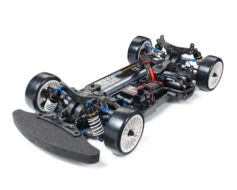
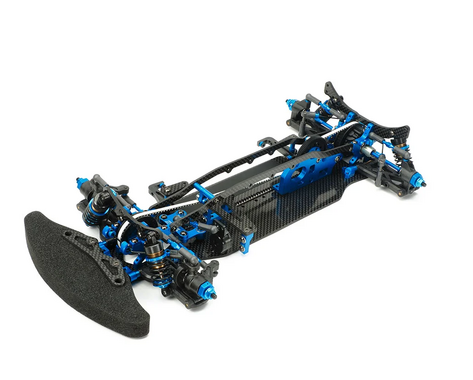
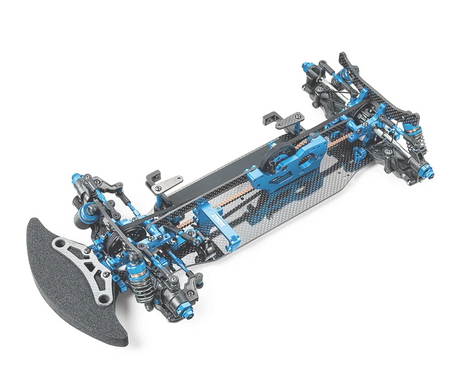
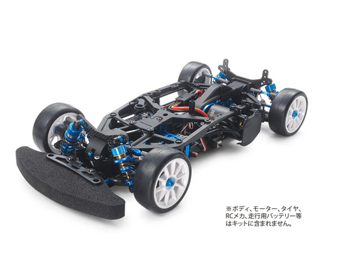

タミヤ TA-07 PRO
引用元画像：タミヤ公式サイト
📋 基本情報
| メーカー | タミヤ（Tamiya） |
|---|---|
| 機種名 | TA-07 PRO |
| 型番 | 58636 |
| 発売時期 | 2016年6月 |
| 生産状況 | 現行販売中 |
| カテゴリー | ラジコンカー（1/10スケール 電動RCカー） |
| サブカテゴリー | ツーリングカー（オンロード競技モデル） |
📏 シャーシスペック
| シャーシ長 | 370mm（ボディ等含まず） |
|---|---|
| シャーシ幅 | 187mm |
| ホイールベース | 257mm |
| フレーム | 樹脂製ロワデッキ＋アッパーフレーム（コンポジットタイプ） |
⚙️ 駆動系
| 駆動方式 | 横置きモーター・シングルベルトドライブ4WD |
|---|---|
| デフギヤ | 前後ともオイル封入式ギヤデフ |
| モーター搭載位置 | 3ヶ所選択可能（前・中・後） |
| モーター | 540タイプ（ブラシレスモーター推奨） |
| ベアリング | フルベアリング仕様 |
🔧 サスペンション
| 形式 | 4輪ダブルウィッシュボーン |
|---|---|
| ダンパー | TRFスペシャルダンパー |
| ステアリング | 3分割タイロッド式 |
| サスアーム | TRF419系サスアーム&アップライト |
💡 特徴
革新的なフレーム設計
- ナロータイプのロワデッキにアッパーフレームを組み合わせたコンポジットシャーシ
- 最適なロール&ピッチング剛性を発揮
- フレームの一部を脱着してシャーシ剛性の調整が可能
- パーツの取り付けに皿ビスを使用し、シャーシ裏面をフラット化
モーター搭載位置が選べる画期的システム
- モーター搭載位置を3ヶ所（前・中・後）から選択可能
- 搭載位置変更時にベルト交換不要
- 基本的にベルトテンションの再調整だけでOK
- 様々なコースレイアウトやセッティングに幅広く対応
TRFのノウハウを投入
- 世界のレースを戦うTRFのノウハウを投入
- ピュアレーサーTRF419の足まわりやステアリング系を使用
- TRFダンパーやアッセンブリーユニバーサルシャフトなど高機能パーツを標準装備
- ハイトルクサーボセイバー採用
調整幅の広さ
- あらゆるタイプのドライバーに合わせられる調整幅
- セッティングの自由度が高い
- 片持ち式サーボマウント採用
🎨 バリエーション
📦 TA-07 MS

カーボン製ロワ&垂直配置アッパーデッキで走行性能を飛躍的に向上
• 2.25mm厚カーボン製ロワデッキ + 2.0mm厚アッパーデッキ2枚（垂直配置）
• TRF-SSBBダンパー標準装備
• 前後駆動系を約2mm低く搭載して加速時のトラクション向上
• 20Tセンタープーリー使用でベルトテンションを最小化
📦 TA-07 MSX

シングルベルトドライブ4WDの最高峰
• 2.25mm厚カーボンロワデッキ + 2.0mm厚アルミロワデッキ付属
• 2.0mm厚カーボンアッパーデッキ（垂直配置）
• モーターポジションは2ヶ所選択可能（トラクション特性が異なる）
• TRF-SSBBダンパー標準装備
📦 TA-07 R

タミヤグランプリ最適マシン
• オプションパーツを満載したレース仕様
• ローフリクションベルト（ホワイト）専用装備
• ダブルカルダンドライブシャフト採用
• TRFビッグボアダンパー装備
📦 TA-07 RR

レースの勝利を狙える仕様
• TRFメンバーが厳選したオプションパーツ満載
• 専用カーボンフロントステフナーでピッチング剛性向上
• フロントのグリップ感を高めて安定したコーナリング性能
• TRF419サスペンションアップグレードセット装備
🔧 ぽすとそに工房での修理実績
修理難易度
★★★★☆（上級者向け、高度なセッティング知識が必要）
よくある故障・注意点
- ベルトテンションの調整が重要（定期的な確認が必要）
- コンポジットフレームの剛性調整には知識が必要
- モーター位置変更時の再セッティングが必須
- TRFダンパーのメンテナンスは計画的に
修理のポイント
- ベルトの張り具合を定期的にチェック
- フレーム剛性の調整は慎重に（走行フィーリングを確認しながら）
- デフギヤのオイル粘度選びが重要
- ダンパーのオイル漏れに注意
その他の特徴
- 中級者～上級者向けの競技用シャーシ
- セッティングの幅が広く、乗り手の技量が反映されやすい
- モーター位置による操縦性の違いを楽しめる
- タミヤグランプリやタミヤチャレンジカップに最適